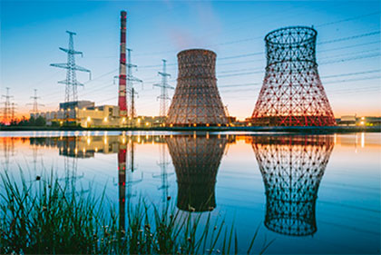
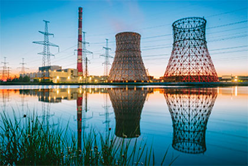

О НАС
Государственное предприятие «Харьковский научно-исследовальский институт комплексной автоматизации» (ГП «ХИКА») образован в 1992 году на базе Всесоюзного Центрального НИИ комплексной автоматизации (ЦНИИКА, г. Москва) - является головным институтом Министерства энергетики и угольной промышленности Украины по разработке и внедрению управляющих и информационно-вычислительных систем (УВС и ИВС) верхнего уровня в составе АСУ ТП энергоблоков ТЭС и АЭС.
Институт располагает высококвалифицированными научно-техническими кадрами, имеющими многолетний опыт создания и внедрения разработанных систем. Организационная структура ГП «ХИКА» представлена 4 научно-производственными отделениями:
- отделение №1 математического и информационного обеспечения задач АСУ ТП энергоблоков ТЭС и АЭС;
- отделение №2 программного обеспечения верхнего уровня АСУ ТП энергоблоков ТЭС и АЭС;
- отделение №3 функционирования подсистем АСУ ТП энергоблоков ТЭС и АЭС;
- отделение №4 АСУ ТП ТЭС и АЭС;
Парк вычислительной техники ГП «ХИКА» включает в себя 185 современных компьютеров, серверы и сетевое оборудование. Научно-технические работы института выполняются на уникальном высокотехнологичном оборудовании (полигоне) общей площадью 385 м2, на котором проводят разработку, моделирование, наладку и опробование разрабатываемых систем перед внедрением их на объектах «под ключ».
Полигон института это:
- рабочие станции моделирования технологических процессов на энергоблоках;
- рабочие места операторов (РМОТ);
- сервера архивации;
- шлюзы внешних систем;
- комплекс технических средств МСКУ – 4 для связи с внешним оборудованием и системами АЭС и ТЭС;
- синхрометр системы единого времени;
В настоящее время ГП «ХИКА» выполняет:
1. Поэтапную модернизацию верхнего и нижнего уровней ИВС на блоках АЭС с реакторами ВВЭР-1ООО в Украине и в России:
- модернизация ИВС энергоблока с интеграцией АСРК, АСКРО и СППБ энергоблока №3 ОП Южно-Украинской АЭС (Украина);
- модернизация ИВС «ТИТАН-2» путем замены программно-технических комплексов на энергоблоке №4 Балаковской АЭС (Россия);
- техническое сопровождение программного обеспечения ИВС энергоблоков № 1-4 ОП «Ровенская АЭС» (Украина);
- модернизация НУ УВС энергоблока №5 ОП «Запорожская АЭС» на базе ТС МСКУ-4.
2. Реконструкцию и развитие ИВС и АСУ ТП блоков ТЭС:
- разработка и внедрение верхнего уровня СКУ блока в части КИП и А котла при модернизации системы пылеприготовления на
энергоблоке № 6 Змиевской ТЭС ЧАО «Центрэнерго»;
3. Разработку и внедрение функций поддержки оператора энергоблока, диагностики энерго-оборудования и полномасштабных тренажеров
энергоблоков АЭС.
4. Участвует в создании кризисных центров на АЭС и комплексной (сводной) программе повышения уровня безопасности атомных
электростанций при продлении срока эксплуатации энергоблоков АЭС.
 

Перечень объектов автоматизации
К настоящему времени ГП «ХИКА» разработал и внедрил более 60 ИВС и УВС в составе АСУ ТП энергоблоков мощностью 200, 300 и 800 МВт ТЭС и мощностью 440 и 1000 МВт АЭС с реакторами типа ВВЭР-440 и ВВЭР-1000 на электростанциях Украины, России, Китая, Болгарии:
- Змиевская ТЭС, блоки мощностью по 200 МВт (№2,5,6) и 300 МВт (№9, 10);
- Углегорская ТЭС, блоки мощность по 300 МВт (№ 1-4) (Украина);
- Трипольская ТЭС, блок мощностью 300 МВТ(№ 2) (Украина);
- Криворожская ТЭС, блок мощностью 300 МВт (№ 3) (Украина);
- Запорожская ТЭС, блоки мощностью по 300 МВт (№1-3), блоки мощностью по 800 МВт (№5-7) (Украина);
- ХарТЭЦ-5, блок мощностью 300 МВт (№3) (Украина);
- Запорожская АЭС, блоки мощностью по1000 МВт (№ 1-6) (Украина);
- Запорожская АЭС, блоки мощностью по1000 МВт (№ 1-6) (Украина);
- Хмельницкая АЭС, блок мощностью 1000 МВт (№ 1, 2) (Украина);
- Ровенская АЭС, блоки мощностью 440 МВТ (№ 1, 2) (Украина);
- Ровенская АЭС, блоки мощностью 1000 МВТ(№ 3, 4) (Украина);
- Краснодарская ТЭЦ, ГТУ (№ 1-2) мощностью по 100 МВт (Россия);
- Ростовская АЭС, блок мощностью 1000 МВт (№1) (Россия);
- Балаковская АЭС, блоки мощностью по1000 МВт (№ 1-4) (Россия);
- Кольская АЭС, блоки мощностью по 440 МВт(№ 1-2) (Россия);
- ТЭС «Инкоу», 2 блока по 300 МВт (Китай);
- ТЭС «Нанкин», 2 блока по 300 МВт (Китай);
- АЭС «Козлодуй», блоки по 1000 МВт (№5-6) (Болгария).
Сертификаты
ГП «ХИКА» имеет сертификат на систему управления качеством, зарегистрированный в Реестре системы сертификации "РОСУКРСЕРТ" №8О059-4059-18 от 01.10.2018 г. Для выполнения работ в области ядерной энергетики институт имеет лицензию поставщика ДП НАЭК "ЭНЕРГОАТОМ" (Решение об утверждении поставщика № РШ-П 0.24.164-18 от 10.12.2018 г.), которое дает ему право предоставлять для АЭС такие услуги: проектирование, разработка, внедрение и сопровождение автоматизированных систем управления технологическими процессами АСУ ТП энергоблоков, а также разрабатывать эксплуатационную документацию по информационному, программному и техническому обеспечению АСУ ТП, что подтверждает высокой уровень выполнения научно-технических работ на всех действующих энергоблоках АЭС Украины.